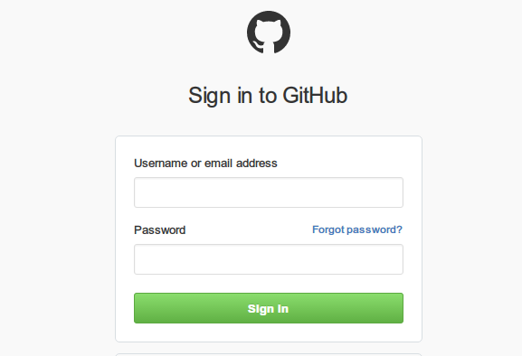
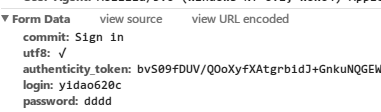
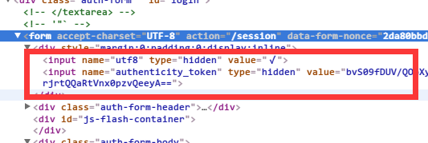

Scrapy教程11- 模拟登录¶
有时候爬取网站的时候需要登录，在Scrapy中可以通过模拟登录保存cookie后再去爬取相应的页面。这里我通过登录github然后爬取自己的issue列表来演示下整个原理。
要想实现登录就需要表单提交，先通过浏览器访问github的登录页面https://github.com/login， 然后使用浏览器调试工具来得到登录时需要提交什么东西:

我这里使用chrome浏览器的调试工具，F12打开后选择Network，并将Preserve log勾上。 我故意输入错误的用户名和密码，得到它提交的form表单参数还有POST提交的URL:

去查看html源码会发现表单里面有个隐藏的authenticity_token值，这个是需要先获取然后跟用户名和密码一起提交的:

重写start_requests方法¶
要使用cookie，第一步得打开它呀，默认scrapy使用CookiesMiddleware中间件，并且打开了。如果你之前禁止过，请设置如下
COOKIES_ENABLES = True
我们先要打开登录页面，获取authenticity_token值，这里我重写了start_requests方法
# 重写了爬虫类的方法, 实现了自定义请求, 运行成功后会调用callback回调函数
def start_requests(self):
return [Request("https://github.com/login",
meta={'cookiejar': 1}, callback=self.post_login)]
# FormRequeset
def post_login(self, response):
# 先去拿隐藏的表单参数authenticity_token
authenticity_token = response.xpath(
'//input[@name="authenticity_token"]/@value').extract_first()
logging.info('authenticity_token=' + authenticity_token)
pass
start_requests方法指定了回调函数，用来获取隐藏表单值authenticity_token，同时我们还给Request指定了cookiejar的元数据，用来往回调函数传递cookie标识。
使用FormRequest¶
Scrapy为我们准备了FormRequest类专门用来进行Form表单提交的
# 为了模拟浏览器，我们定义httpheader
post_headers = {
"Accept": "text/html,application/xhtml+xml,application/xml;q=0.9,image/webp,*/*;q=0.8",
"Accept-Encoding": "gzip, deflate",
"Accept-Language": "zh-CN,zh;q=0.8,en;q=0.6",
"Cache-Control": "no-cache",
"Connection": "keep-alive",
"Content-Type": "application/x-www-form-urlencoded",
"User-Agent": "Mozilla/5.0 (Windows NT 6.1; WOW64) AppleWebKit/537.36 (KHTML, like Gecko) Chrome/49.0.2623.75 Safari/537.36",
"Referer": "https://github.com/",
}
# 使用FormRequeset模拟表单提交
def post_login(self, response):
# 先去拿隐藏的表单参数authenticity_token
authenticity_token = response.xpath(
'//input[@name="authenticity_token"]/@value').extract_first()
logging.info('authenticity_token=' + authenticity_token)
# FormRequeset.from_response是Scrapy提供的一个函数, 用于post表单
# 登陆成功后, 会调用after_login回调函数，如果url跟Request页面的一样就省略掉
return [FormRequest.from_response(response,
url='https://github.com/session',
meta={'cookiejar': response.meta['cookiejar']},
headers=self.post_headers, # 注意此处的headers
formdata={
'utf8': '✓',
'login': 'yidao620c',
'password': '******',
'authenticity_token': authenticity_token
},
callback=self.after_login,
dont_filter=True
)]
def after_login(self, response):
pass
FormRequest.from_response()方法让你指定提交的url，请求头还有form表单值，注意我们还通过meta传递了cookie标识。它同样有个回调函数，登录成功后调用。下面我们来实现它
def after_login(self, response):
# 登录之后，开始进入我要爬取的私信页面
for url in self.start_urls:
# 因为我们上面定义了Rule，所以只需要简单的生成初始爬取Request即可
yield Request(url, meta={'cookiejar': response.meta['cookiejar']})
这里我通过start_urls定义了开始页面，然后生成Request，具体爬取的规则和下一页规则在前面的Rule里定义了。注意这里我继续传递cookiejar，访问初始页面时带上cookie信息。
重写_requests_to_follow¶
有个问题刚开始困扰我很久就是这里我定义的spider继承自CrawlSpider，它内部自动去下载匹配的链接，而每次去访问链接的时候并没有自动带上cookie，后来我重写了它的_requests_to_follow()方法解决了这个问题
def _requests_to_follow(self, response):
"""重写加入cookiejar的更新"""
if not isinstance(response, HtmlResponse):
return
seen = set()
for n, rule in enumerate(self._rules):
links = [l for l in rule.link_extractor.extract_links(response) if l not in seen]
if links and rule.process_links:
links = rule.process_links(links)
for link in links:
seen.add(link)
r = Request(url=link.url, callback=self._response_downloaded)
# 下面这句是我重写的
r.meta.update(rule=n, link_text=link.text, cookiejar=response.meta['cookiejar'])
yield rule.process_request(r)
页面处理方法¶
在规则Rule里面我定义了每个链接的回调函数parse_page，就是最终我们处理每个issue页面提取信息的逻辑
def parse_page(self, response):
"""这个是使用LinkExtractor自动处理链接以及`下一页`"""
logging.info(u'--------------消息分割线-----------------')
logging.info(response.url)
issue_title = response.xpath(
'//span[@class="js-issue-title"]/text()').extract_first()
logging.info(u'issue_title：' + issue_title.encode('utf-8'))
完整源码¶
#!/usr/bin/env python
# -*- encoding: utf-8 -*-
"""
Topic: 登录爬虫
Desc : 模拟登录https://github.com后将自己的issue全部爬出来
tips：使用chrome调试post表单的时候勾选Preserve log和Disable cache
"""
import logging
import re
import sys
import scrapy
from scrapy.spiders import CrawlSpider, Rule
from scrapy.linkextractors import LinkExtractor
from scrapy.http import Request, FormRequest, HtmlResponse
logging.basicConfig(level=logging.INFO,
format='%(asctime)s %(filename)s[line:%(lineno)d] %(levelname)s %(message)s',
datefmt='%Y-%m-%d %H:%M:%S',
handlers=[logging.StreamHandler(sys.stdout)])
class GithubSpider(CrawlSpider):
name = "github"
allowed_domains = ["github.com"]
start_urls = [
'https://github.com/issues',
]
rules = (
# 消息列表
Rule(LinkExtractor(allow=('/issues/\d+',),
restrict_xpaths='//ul[starts-with(@class, "table-list")]/li/div[2]/a[2]'),
callback='parse_page'),
# 下一页, If callback is None follow defaults to True, otherwise it defaults to False
Rule(LinkExtractor(restrict_xpaths='//a[@class="next_page"]')),
)
post_headers = {
"Accept": "text/html,application/xhtml+xml,application/xml;q=0.9,image/webp,*/*;q=0.8",
"Accept-Encoding": "gzip, deflate",
"Accept-Language": "zh-CN,zh;q=0.8,en;q=0.6",
"Cache-Control": "no-cache",
"Connection": "keep-alive",
"Content-Type": "application/x-www-form-urlencoded",
"User-Agent": "Mozilla/5.0 (Windows NT 6.1; WOW64) AppleWebKit/537.36 (KHTML, like Gecko) Chrome/49.0.2623.75 Safari/537.36",
"Referer": "https://github.com/",
}
# 重写了爬虫类的方法, 实现了自定义请求, 运行成功后会调用callback回调函数
def start_requests(self):
return [Request("https://github.com/login",
meta={'cookiejar': 1}, callback=self.post_login)]
# FormRequeset
def post_login(self, response):
# 先去拿隐藏的表单参数authenticity_token
authenticity_token = response.xpath(
'//input[@name="authenticity_token"]/@value').extract_first()
logging.info('authenticity_token=' + authenticity_token)
# FormRequeset.from_response是Scrapy提供的一个函数, 用于post表单
# 登陆成功后, 会调用after_login回调函数，如果url跟Request页面的一样就省略掉
return [FormRequest.from_response(response,
url='https://github.com/session',
meta={'cookiejar': response.meta['cookiejar']},
headers=self.post_headers, # 注意此处的headers
formdata={
'utf8': '✓',
'login': 'yidao620c',
'password': '******',
'authenticity_token': authenticity_token
},
callback=self.after_login,
dont_filter=True
)]
def after_login(self, response):
for url in self.start_urls:
# 因为我们上面定义了Rule，所以只需要简单的生成初始爬取Request即可
yield Request(url, meta={'cookiejar': response.meta['cookiejar']})
def parse_page(self, response):
"""这个是使用LinkExtractor自动处理链接以及`下一页`"""
logging.info(u'--------------消息分割线-----------------')
logging.info(response.url)
issue_title = response.xpath(
'//span[@class="js-issue-title"]/text()').extract_first()
logging.info(u'issue_title：' + issue_title.encode('utf-8'))
def _requests_to_follow(self, response):
"""重写加入cookiejar的更新"""
if not isinstance(response, HtmlResponse):
return
seen = set()
for n, rule in enumerate(self._rules):
links = [l for l in rule.link_extractor.extract_links(response) if l not in seen]
if links and rule.process_links:
links = rule.process_links(links)
for link in links:
seen.add(link)
r = Request(url=link.url, callback=self._response_downloaded)
# 下面这句是我重写的
r.meta.update(rule=n, link_text=link.text, cookiejar=response.meta['cookiejar'])
yield rule.process_request(r)
你可以在GitHub上看到本文的完整项目源码，还有另外一个自动登陆iteye网站的例子。